Thelio Mira (Parts & Repairs)
Many components in your Thelio Mira can be upgraded or replaced as necessary. This page uses photos of the the R4-N4 revision, which indicates:
- R4: The fourth AMD motherboard used in Thelio Mira.
- N4: Based on the fourth revision of the nebula40 chassis.
Minor case details may vary based on the production date of the unit, but screw counts, general component locations, and other details should remain the same unless otherwise noted.
Power the machine off, switch off the power supply, and unplug all peripherals before working with any internal components. Then, follow these step-by-step guides for instructions:
- Removing the protective plastic
- Removing the side panels
- Removing the front glass
- Removing the top shell
- Replacing the RAM
- Replacing the GPU
- Replacing the M.2 drives
- Clearing the CMOS
- Replacing the CMOS battery
- Replacing the WiFi/Bluetooth card
- Accessing spare 2.5“ drive screws
- Adding/removing 2.5“ storage drives
- Replacing the included 2.5“ backplane
- Installing an additional 2.5“ or 3.5“ bay
- Replacing the power supply
- Cleaning the side dust filter
- Replacing the side fans
- Cleaning the bottom dust filter
- Replacing the bottom fans
- Replacing the CPU cooler/thermal paste and CPU
- Replacing the Thelio Io board
- Replacing the front I/O
- Replacing the power button
Removing the protective plastic:
Thelio Mira’s glass front panel comes with a protective plastic sheet on the front.
Tools required: None
Time estimate: 30 seconds
Difficulty: Easy ●
Steps to remove the protective plastic:
- Pull the protective plastic off the front of the computer.
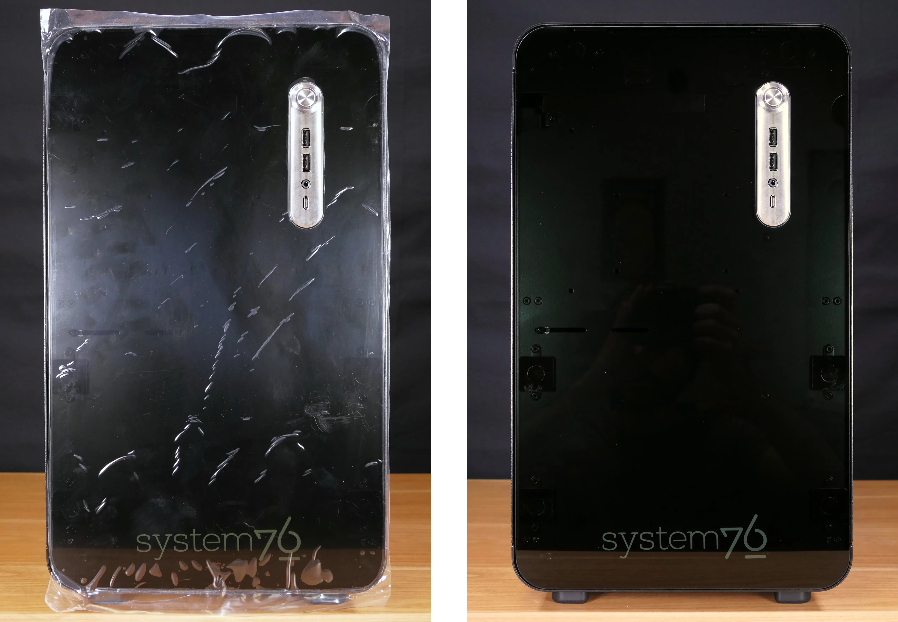
Removing the side panels:
The side panels can be removed to access the internal components.
- The left side panel (with a mesh window) covers the motherboard, RAM, and PCI Express cards.
- The right side panel (without a window) covers the power supply, Thelio Io board, and front I/O.
Tools required: Cross-head (Phillips) screwdriver (optional)
Time estimate: 2 minutes
Difficulty: Easy ●
Steps to remove the left side panel:
- Remove the two back thumbscrews holding the side panel onto the machine.
- The left side panel’s screws are on the right when viewed from the back of the machine.
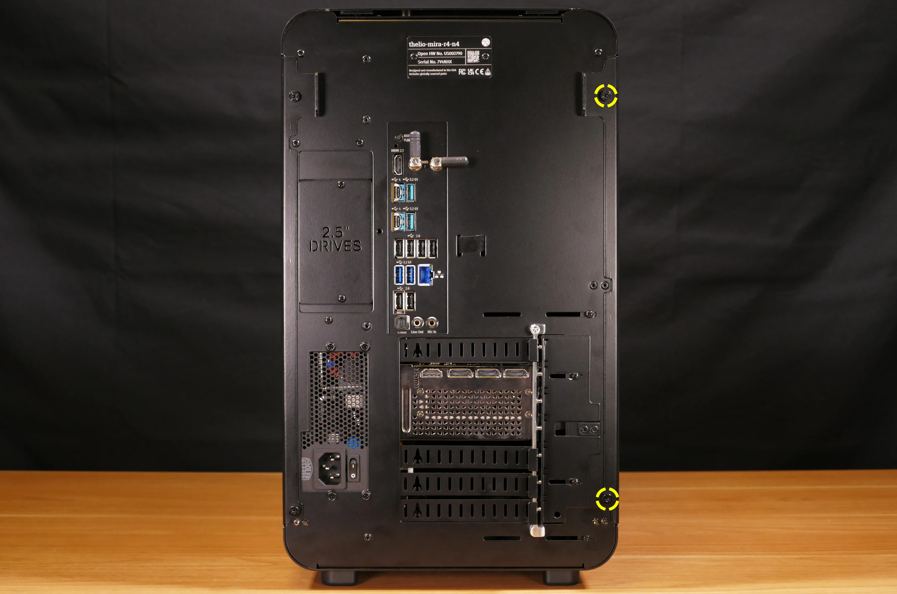
- Starting from the tab at the upper back, pull the side panel off of the machine.
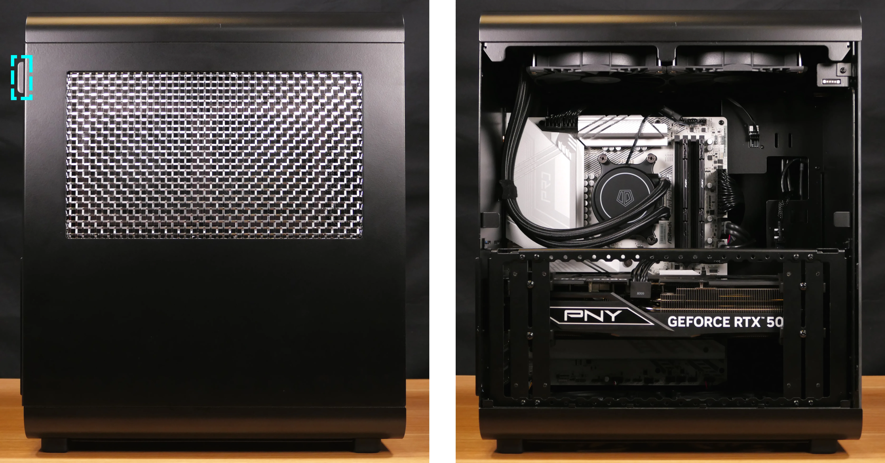
Steps to remove the right side panel:
- Remove the two back thumbscrews holding the side panel onto the machine.
- The right side panel’s screws are on the left when viewed from the back of the machine.
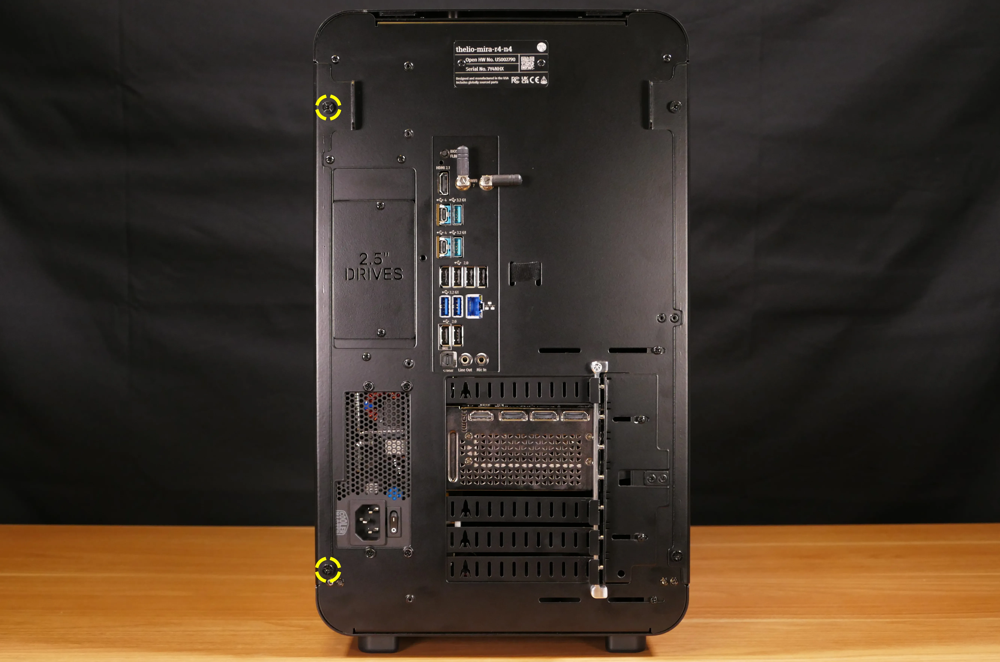
- Starting from the tab at the upper back, pull the side panel off of the machine.
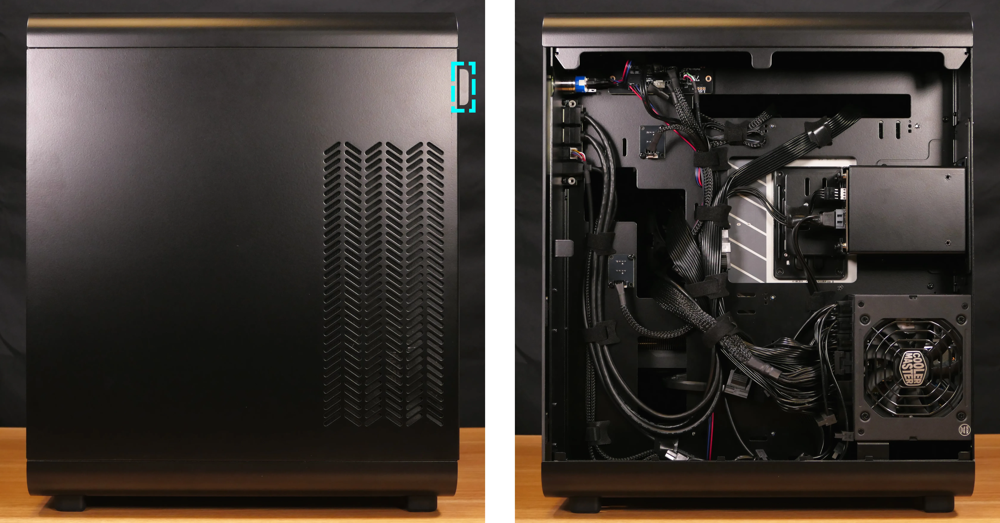
Removing the front glass:
The front glass panel can be removed to access the screws and velcro cutouts underneath.
Tools required: Cross-head (Phillips) screwdriver
Time estimate: 4 minutes
Difficulty: Easy ●
Steps to remove the front glass:
- Follow the steps above to remove the left and right side panels.
- Unscrew the bracket screw behind the top left of the front glass (at the top right when looking from the left side).
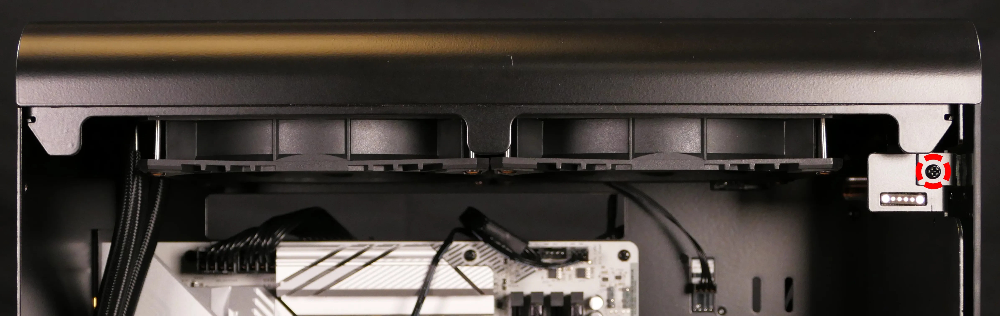
- Pull the front glass off from the cutouts at the top.
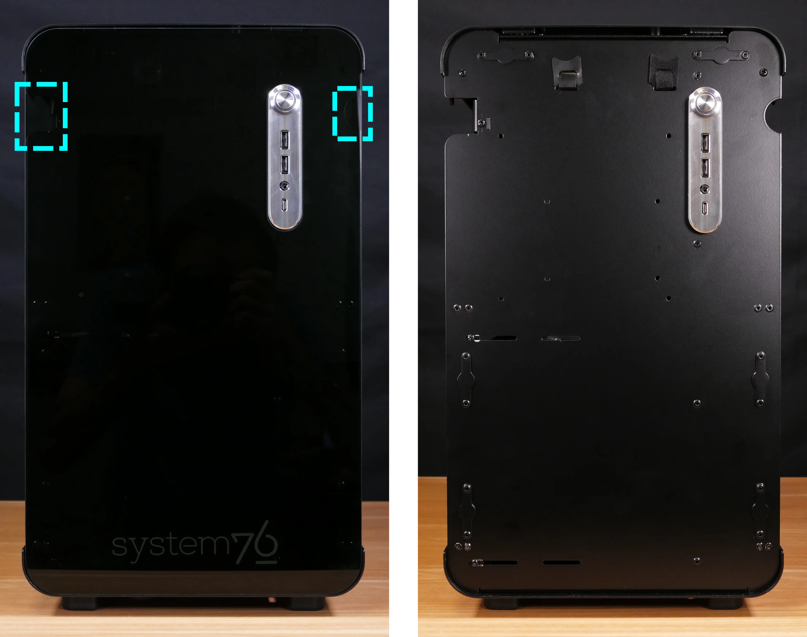
Removing the top shell:
The top shell of the chassis can be removed to access the 2.5“ drive screws.
Tools required: Cross-head (Phillips) screwdriver
Time estimate: 6 minutes
Difficulty: Easy ●
Steps to remove the top:
- Follow the steps above to remove the left and right side panels and remove the front glass.
- Unscrew the four screws (two on the front, and two on the back) holding the top of the chassis on.
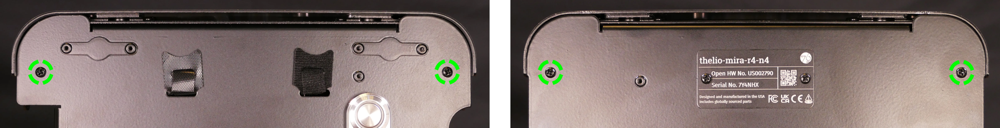
- Pull the top shell off of the chassis.
- When reinstalling the top shell, ensure the ventilation cutouts are aligned with the heatsink underneath.
Replacing the RAM:
Thelio Mira B4-N4 supports up to 192GB (4x48GB) of DDR5 (non-ECC) RAM.
- The 1x16GB factory configuration runs at a speed of 5200 MHz.
- With 24GB (1x24GB) to 96GB (2x48GB) of RAM, the RAM runs at a speed of 5600 MHz.
- 128GB and above (with four DIMMs) runs at 3600 MHz.
- Greater RAM amounts and speeds may be possible with aftermarket upgrades and overclocking.
- 96GB (2x48GB) has been tested to run at 6400 MHz with DIMMs supporting that speed.
- Other amounts and speeds are not tested or guaranteed.
If you’ve purchased new RAM, need to replace your RAM, or are reseating your RAM, follow these steps.
Tools required: Cross-head (Phillips) screwdriver (optional)
Time estimate: 7 minutes
Difficulty: Easy ●
Steps to replace the RAM:
- Follow the steps above to remove the left side panel.
- To remove an existing RAM stick, flip the top and bottom latches away from the stick, then pull the stick out of the slot.
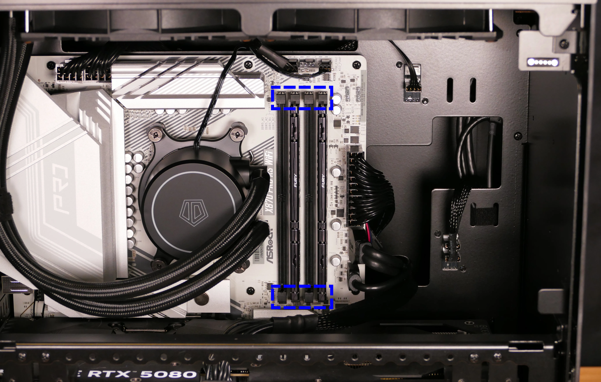
- Make sure the tabs on the top and bottom of the slot are open (pulled away from the slot), then insert the new RAM (or re-seat the existing RAM) into the slot.
- The RAM stick will only fit in one direction. The larger group of pins goes on top.
- Push near the top and bottom of the RAM stick until both tabs click shut.
- Use the following guide for placement of the RAM sticks:
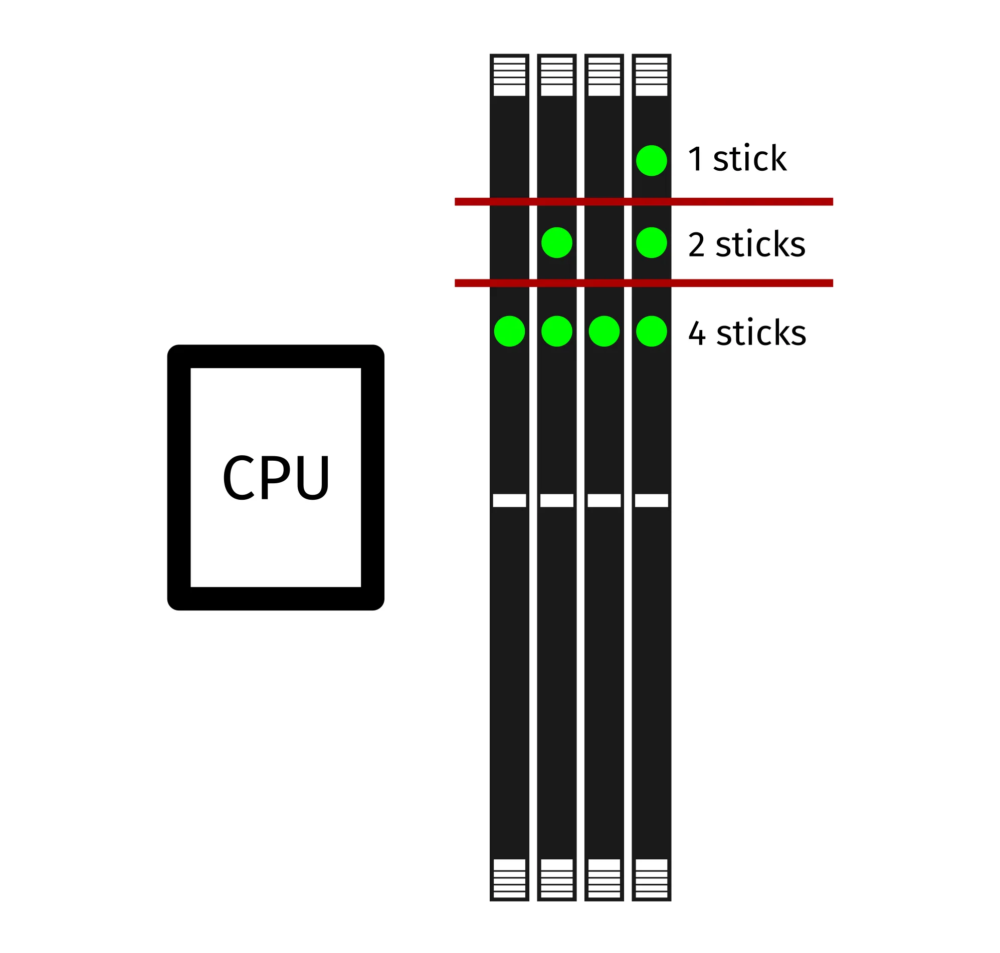
- Replace the left side panel.
Replacing the GPU:
Thelio Mira ships with an optional dedicated GPU in the PCIe 5.0 x16 slot (top slot). GPUs greater than three slots tall will obstruct the bottom PCIe slot.
Tools required: Cross-head (Phillips) screwdriver
Time estimate: 15 minutes
Difficulty: Medium ●
Steps to replace the GPU:
- Follow the steps above to remove the left side panel and remove the front glass.
- Remove the four screws (two in the front, and two in the back) holding the GPU brace into the chassis.
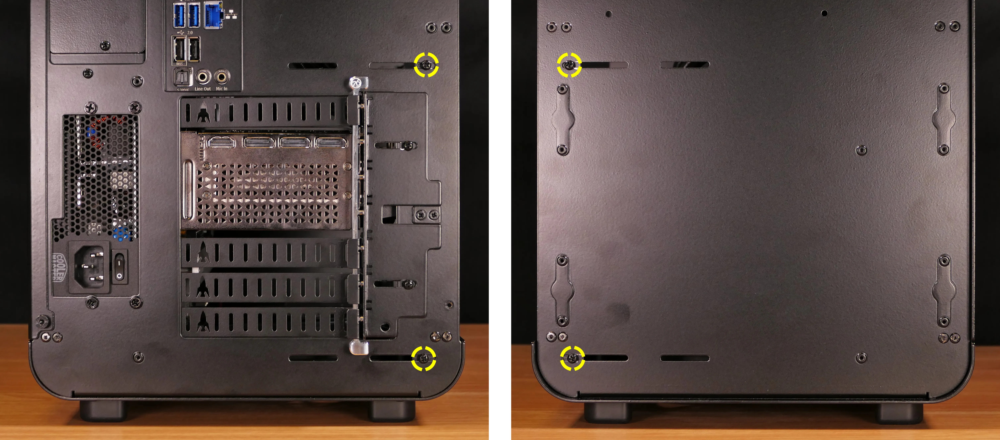
- Slide the GPU brace out of the chassis.
- Start by pivoting the top edge out of the chassis, then slide the bottom edge inward and upward until it can be removed from the chassis.
- Unplug any power cables connected to the GPU.
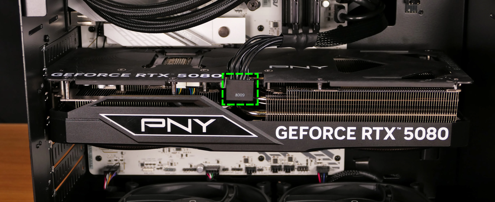
- Partially loosen the two back screws holding the PCIe bracket in place, and slide it into the rightmost position.
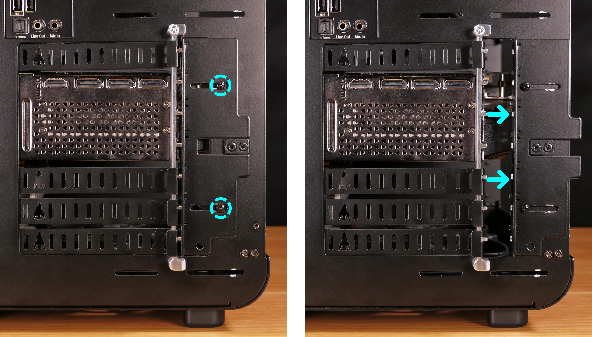
- While holding the GPU, push back the latch on the motherboard (accessible from above the GPU) to free the PCIe connection, then pull the card out of the slot.
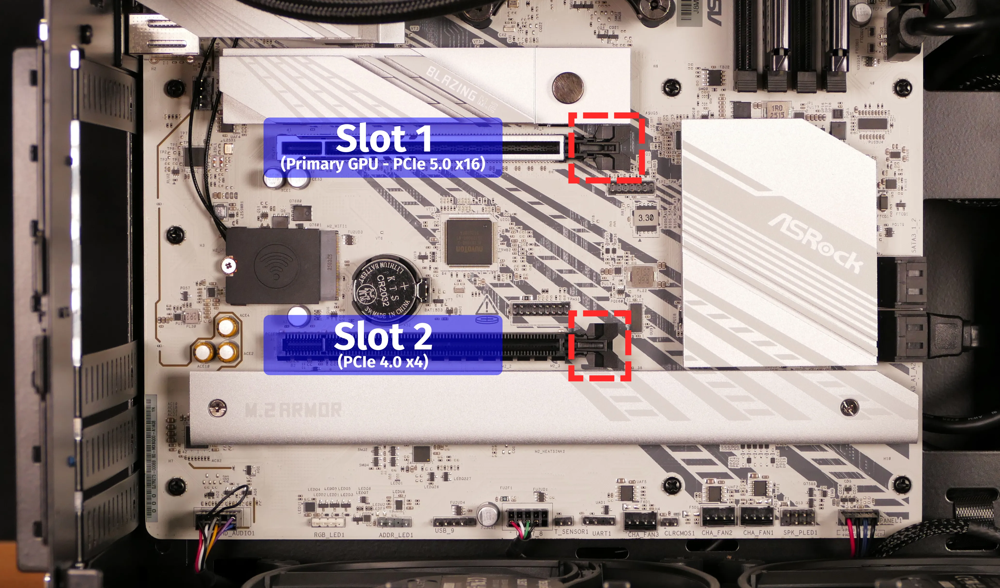
- Insert the new GPU (or re-seat the existing GPU) into the top PCIe slot.
- Close the back PCIe bracket.
- Connect the GPU power cable.
- If necessary, adjust the position of the GPU brace fingers.
- To adjust the height of the GPU brace fingers, partially loosen each finger’s singular screw (highlighted cyan below) from the back, slide the finger to the appropriate height, and re-tighten the screw.
- To adjust the horizontal position of the brace fingers, use the screws at the top and bottom of the brace columns (highlighted red below).
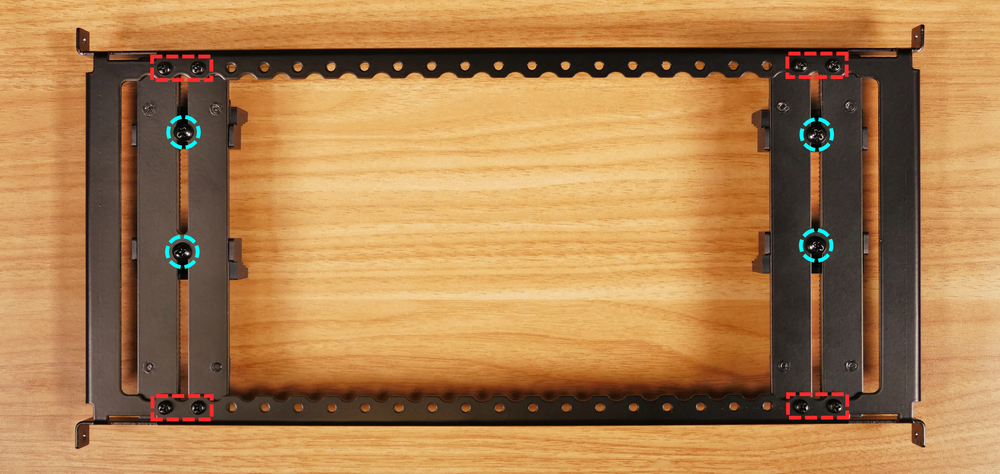
- Reinstall the GPU brace, front glass, and left side panel.
Replacing the M.2 drives:
Thelio Mira R4-N4 has three M.2 storage slots. All three slots are M-key and size 2280.
- Slot 1 supports PCIe NVMe Gen 5.
- Slot 2 supports PCIe NVMe Gen 4.
- If this slot is occupied, the bottom PCIe slot will be disabled.
- Slot 3 supports PCIe NVMe Gen 4 and SATA III.
- If either of the top 2.5“ SATA connectors are populated, then this slot will be limited to PCIe NVMe Gen 3 speeds. The top two 2.5“ SATA connectors are not used by default in Thelio Mira R4-N4.
Factory configurations only offer up to two M.2 SSDs (so at least one slot will be vacant by default).
Tools required: Cross-head (Phillips) screwdriver
Time estimate: 30 minutes
Difficulty: Medium ●
Steps to replace the M.2 drive:
- Follow the steps above to remove the left side panel, and remove additional parts depending on the slot(s) you’re accessing.
- Slot 1: No other components need to be removed.
- Slots 2 and 3: It’s recommended (but not physically required) to remove the front glass and remove the GPU brace for easier access.
- In the below photos, the GPU brace and GPU have been removed for greater visibility.
- Remove the M.2 heatsink for the slot(s) you’re accessing.
- Slot 1: Slide the circle fastener to the left, pivot the heatsink underneath it slightly away from the motherboard, then fully remove the heatsink.
- Slots 2 and 3: The heatsink screws are held captive, and will not come away from the heatsink when fully unscrewed.
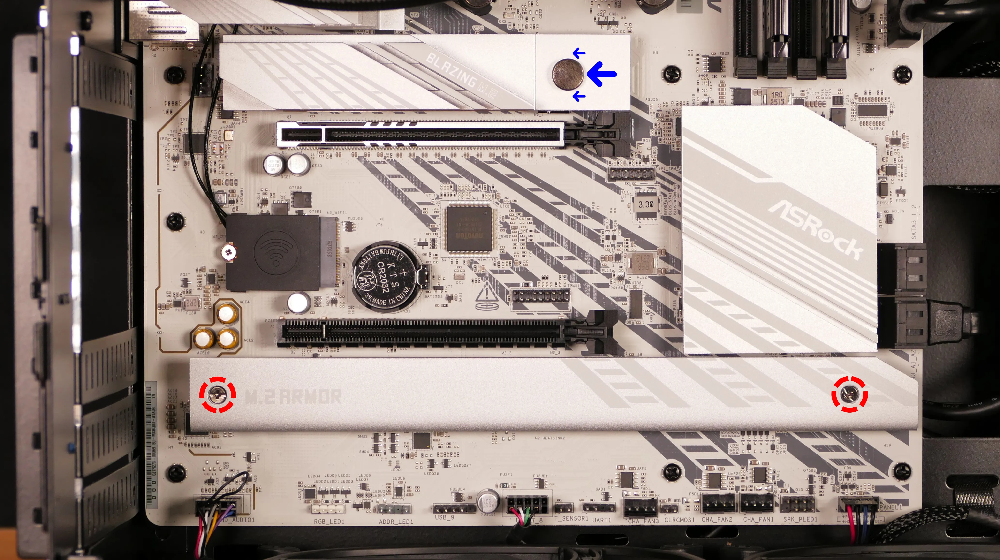
- To remove a drive from a slot, rotate the black circular lever counter-clockwise until it’s not covering the drive. The drive will pop up to an angle, and can be removed from the slot.
- Rotating the circular levers may not be necessary, as the drives can also be held in place solely by the heatsinks.
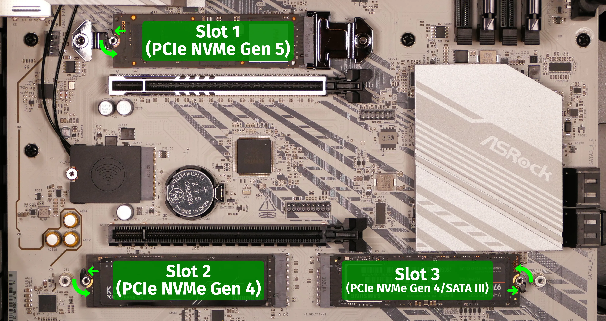
- To install a drive into a slot, insert the connector, then hold the opposite side against the motherboard while rotating the black circular lever clockwise to secure the drive.
- Reinstall the M.2 heatsink(s).
- If you’re using a slot for the first time, peel the protective plastic off of the corresponding thermal tape on the heatsink.
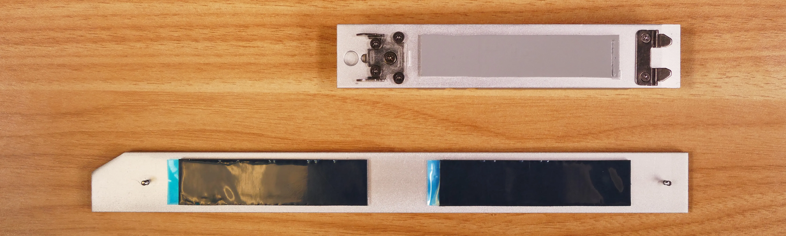
- Reinstall the GPU, GPU brace, front glass, and left side panel as applicable.
Clearing the CMOS:
The CMOS can be cleared without removing the CMOS battery using a jumper.
Tools required: Cross-head (Phillips) screwdriver
Time estimate: 15 minutes
Difficulty: Medium ●
Steps to clear the CMOS:
- Follow the steps above to remove the left side panel.
- Use a conductive piece of metal (such as the screwdriver, if applicable) to bridge the two pins of the
CLRCMOS1jumper at the bottom of the motherboard for at least three seconds.
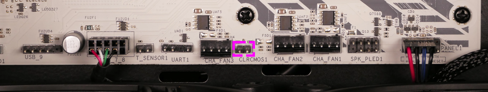
- Reinstall the left side panel.
Replacing the CMOS battery:
The CMOS battery supplies power to the system’s CMOS chip. UEFI settings and the computer’s hardware clock are stored on the CMOS. If your clock is constantly resetting, it’s likely your CMOS battery needs to be replaced. Removing the CMOS battery is also an alternative way to force a CMOS reset.
Warning (ingestion hazard): Keep batteries out of reach of children. Death or serious injury can occur if ingested. If a battery is suspected to be swallowed or inserted inside any part of the body, seek immediate medical attention. In the US, you can also call the National Battery Ingestion Hotline for guidance: +1 (800) 498-8666
Part numbers:
- The CMOS battery is a standard KTS CR2032 battery.
Tools required: Cross-head (Phillips) screwdriver, plastic flathead screwdriver
Time estimate: 20 minutes
Difficulty: Medium ●
Steps to replace the CMOS battery:
- Follow the steps above to remove the left side panel, remove the front glass, and remove the GPU.
- Insert a small plastic flathead screwdriver (or similar plastic prying tool) into the clip on the right side, pulling the clip away from the battery and prying the battery away from the clip.
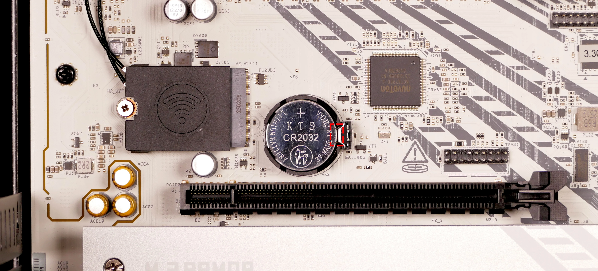
- The CMOS battery will pop out of the slot when cleared of the retaining clip.
- If you are resetting the CMOS, hold down the power button for 10 seconds to discharge any residual energy in the system.
- Install the new CMOS battery (or reinstall the existing CMOS battery) starting at the right side of the slot.
- The positive side of the battery (with text) should face outward.
- Replace the GPU, front glass, and left side panel.
Replacing the wireless card:
Your Thelio Mira’s WiFi and Bluetooth are both handled by the same module. It is a standard M.2 2230 slot with an E-key PCIe interface.
Part numbers:
- Default wireless card (varies based on supply):
- MediaTek
MT7927 - MediaTek
MT7925
- MediaTek
Tools required: Cross-head (Phillips) screwdriver
Time estimate: 15 minutes
Difficulty: High ●
Steps to replace the wireless card:
- Follow the steps above to remove the left side panel, remove the front glass, and remove the GPU.
- Unscrew the wireless card’s screw.
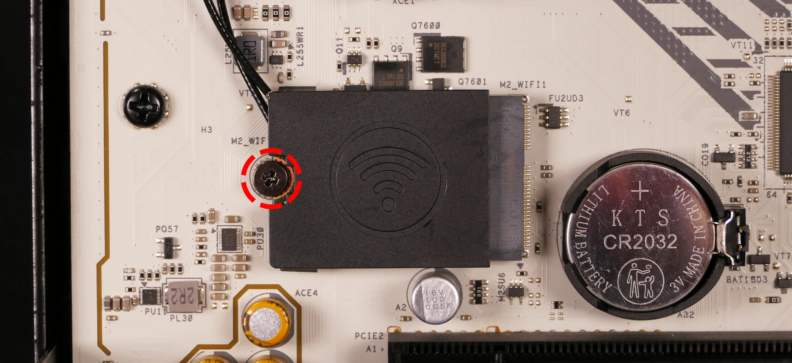
- Slide the black plastic cover to the left until it detatches from the wireless card.
- It may be necessary to rotate the antenna wires to allow the cover to slide off of the card.
- Gently unplug the two antenna wires connecting to the wireless card.
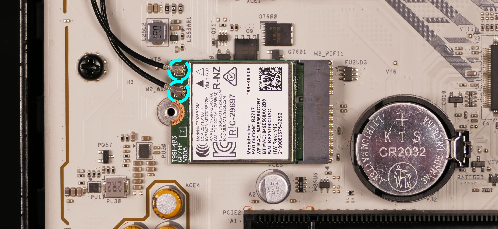
- Pull the left end of the wireless card away from the motherboard to free the card from the thermal pad underneath.
- Use caution when pulling on the card, as it takes significant force to break the seal of the thermal pad, but the wireless card and/or its M.2 slot will break if the card raises to more than 30 degrees off the board.
- Place the new wireless card into the slot at a 30-degree angle, then hold it down to the thermal pad while reinstalling the wireless card screw.
- Attach the two antennas by aligning the circular fittings and pressing onto the wireless card. The connectors will snap into place.
- Use caution when attaching the connectors; the pins can bend, break, or snap.
Accessing spare 2.5“ drive screws:
Additional screws for 2.5“ storage drives are stored under the top shell of the machine.
Tools required: Cross-head (Phillips) screwdriver (optional)
Time estimate: 7 minutes
Difficulty: Easy ●
Steps to access spare 2.5“ drive screws:
- Follow the steps above to remove the left side panel, remove the front glass, and remove the top shell.
- Pop the plastic ring out of the diagonal crossbar.
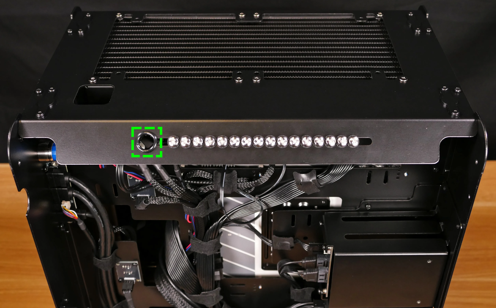
- Slide four screws (per drive) out of the crossbar’s cutout.
- Reinstall the plastic ring, top shell, front glass, and left side panel.
Adding/removing 2.5“ storage drives:
Thelio Mira B4-N4 supports up to two 2.5“ SATA III drives.
Tools required: Cross-head (Phillips) screwdriver
Time estimate: 7 minutes
Difficulty: Easy ●
Steps to add/remove 2.5“ storage drives:
- Unscrew the backplate labeled
2.5" DRIVES.
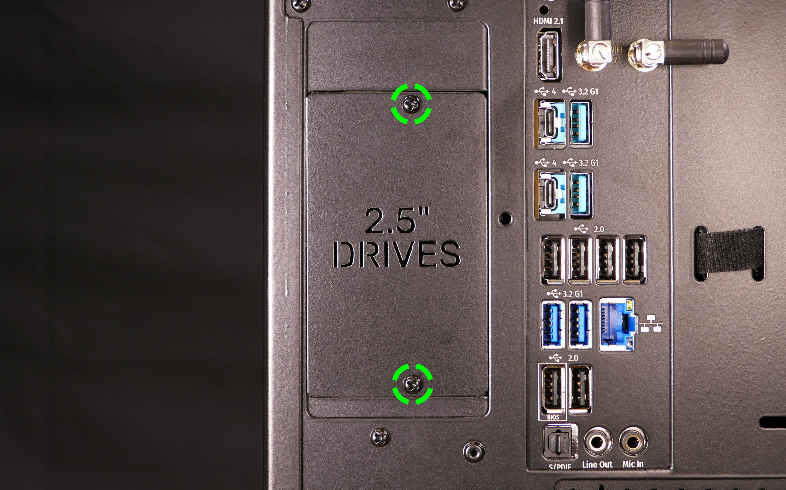
- If screws for your drive aren’t already installed in the 2.5“ drive cage, follow the steps above to remove the left side panel, remove the front glass, remove the top shell, and access the spare 2.5“ drive screws.
- Insert four screws into each 2.5“ storage drive you wish to install.
- Slide each 2.5“ drive into one of the slots leading to the SATA backplane.
- The larger group of pins goes on the top.
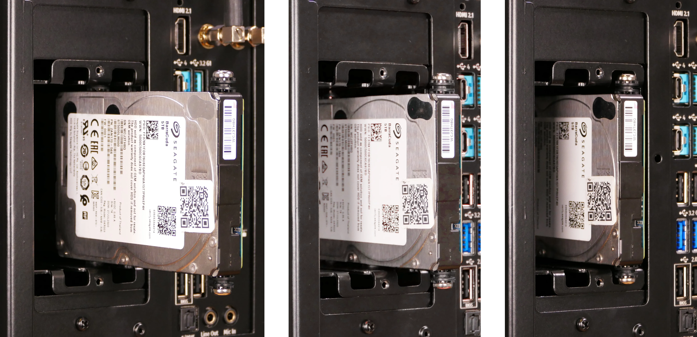
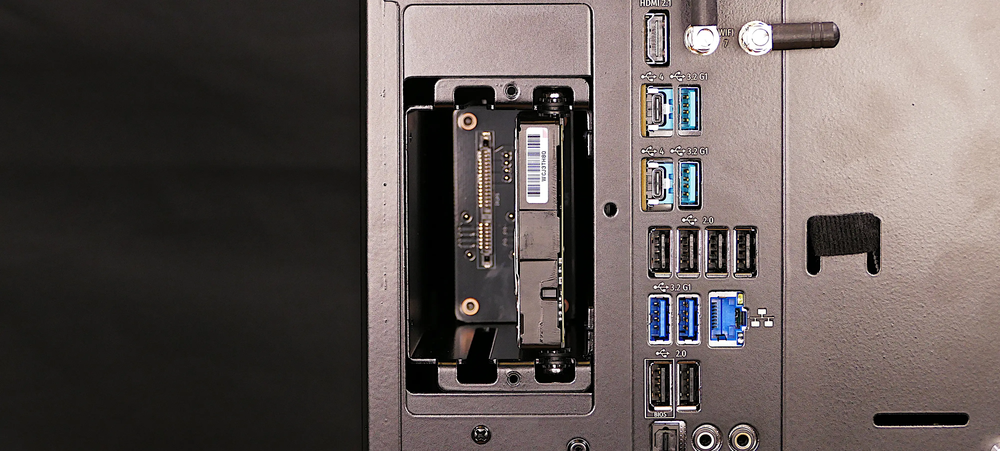
- Replace the 2.5“ drive bay cover.
Replacing the included 2.5“ backplane:
The backplane that connects 2.5“ storage drives to the system upon insertion can be independently replaced using the steps below.
Tools required: Cross-head (Phillips) screwdriver
Time estimate: 15 minutes
Difficulty: Easy ●
Steps to replace the included 2.5“ backplane:
- Follow the steps above to remove the 2.5“ backplate and any installed 2.5“ storage drives and remove the right side panel.
- Unplug the SATA and power connectors from the back of the 2.5“ backplane.
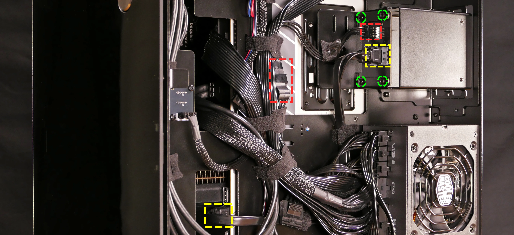
- Unscrew the four screws holding the 2.5“ backplane into the 2.5“ bay.
- Remove the old backplane from the 2.5“ bay by tilting it until it fits out the back of the bay.
- Alternatively, push the backplane out the back of the computer.
- Insert the new backplane into the 2.5“ bay.
- The backplane should be oriented so the port labels are upside-down.
- Screw the new backplane into the 2.5“ bay.
- Plug the SATA and power connectors into the new backplane.
- The order of the SATA data cables shouldn’t matter as long as your operating system and software is configured to address disks by UUID (e.g.
/dev/disk/by-id/...) instead of by letter (e.g./dev/sd_). - By default, the ports connect as follows:
DATA0(on the left) connects toSATA3_A2(on the left, farthest from the motherboard).DATA1(on the right) connects toSATA3_A1(on the right, closest to the motherboard).- The 4-pin Berg adapter connects to a 4-pin Molex cable, which connects to the power supply.
- The order of the SATA data cables shouldn’t matter as long as your operating system and software is configured to address disks by UUID (e.g.
Installing an additional 2.5“ or 3.5“ bay:
In addition to the included 2.5“ bay, you can also install an additional 2.5“ bay to add two additional 2.5“ drive slots (for a total of four). Alternatively, you can install a 3.5“ bay to add two 3.5“ drive slots (in addition to the two included 2.5“ drive slots).
Tools required: Cross-head (Phillips) screwdriver
Time estimate: 15 minutes
Difficulty: Easy ●
Steps to install an additional 2.5“ bay:
- Follow the steps above to remove both side panels and remove the front glass; also remove the new 2.5“ drive bay’s cover (if installed).
- If it’s not already installed, insert the 2.5“ drive backplane into the 2.5“ drive cage, then screw it in from the back.
- On the interior of the cage, the backplane’s larger side gap should face towards the closed side of the cage.
- On the exterior of the cage, the orientation of the backplane will cause the port labels to be upside-down when the cage is installed in the Thelio.
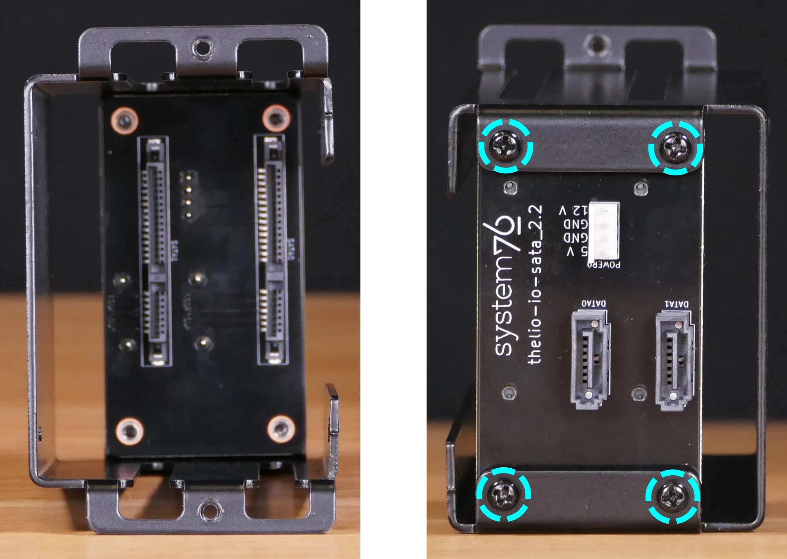
- Screw the 2.5“ drive cage onto the front of the chassis.
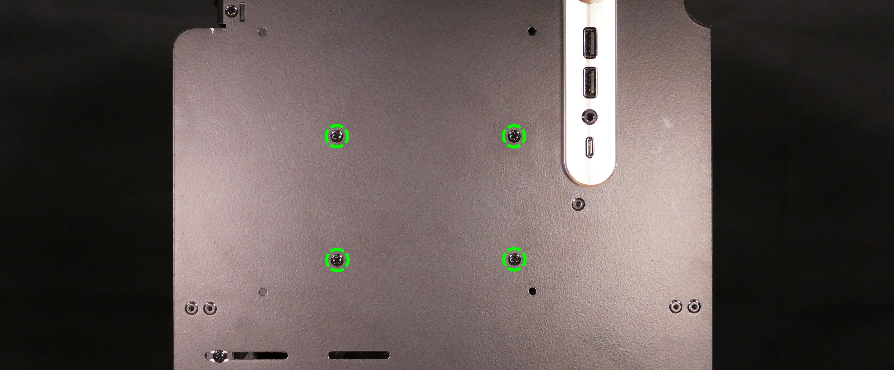
- Connect the backplane to the top two SATA ports on the motherboard, and to the power supply.
- M.2 Slot 3 will be limited to PCIe NVMe Gen 3 speeds while either of the top SATA ports is connected.
- The SATA ports are located behind the dedicated GPU (if installed), but can be accessed from behind using the cutout behind the right side panel.
- If drive mounting screws weren’t included with the additional 2.5“ cage, remove the top shell to access the extra screws.
- Install any desired drives in the 2.5“ cage.
- The drives should be oriented so the larger set of pins is on top.
- Install the 2.5“ cage’s cover.
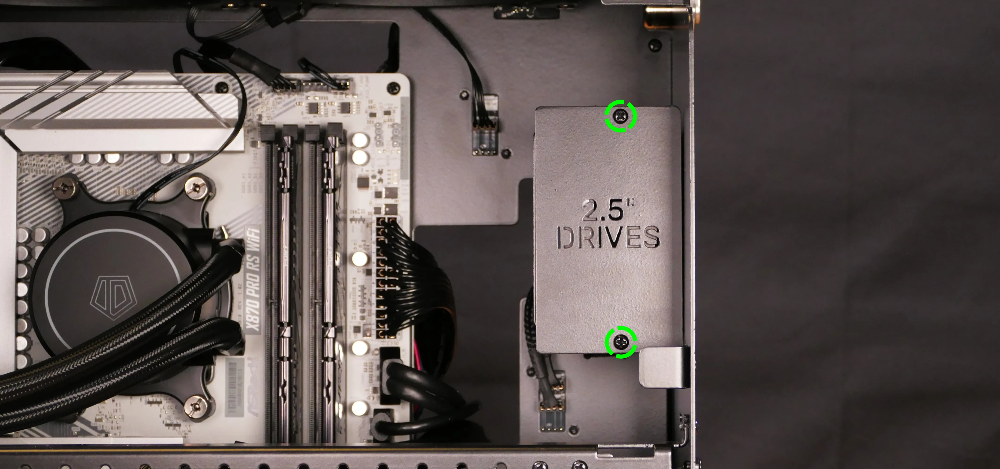
Steps to install an additional 3.5“ bay:
- Follow the steps above to remove both side panels and remove the front glass.
- Screw the 3.5“ drive cage onto the front of the chassis.
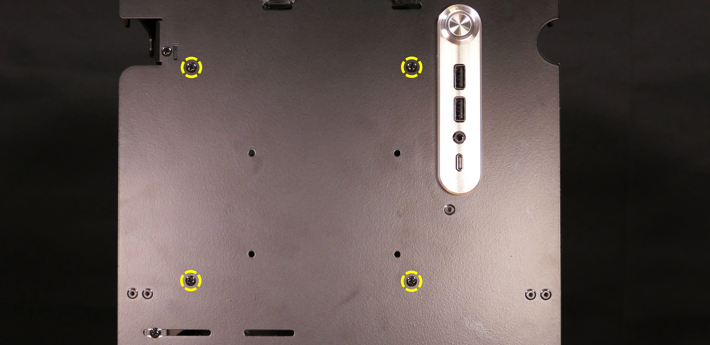
- If drive mounting screws weren’t included with the 3.5“ cage, remove the top shell to access the extra screws.
- Install any desired drives in the 3.5“ cage.
- The drives should be oriented so the larger portion faces the front of the chassis.
- After installing any desired drives in the 3.5“ cage, install the 3.5“ cage’s cover.
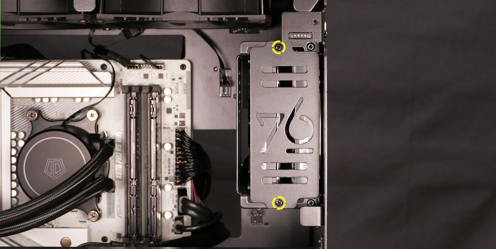
- Connect any installed 3.5“ drives to the top two SATA ports on the motherboard, and to the power supply.
- M.2 Slot 3 will be limited to PCIe NVMe Gen 3 speeds while either of the top SATA ports is connected.
- The SATA ports are located behind the dedicated GPU (if installed), but can be accessed from behind using the cutout behind the right side panel.
Replacing the power supply:
Thelio Mira R4-N4 uses a standard SFX (small form-factor) power supply.
Part numbers:
- 1000W models:
- Thermaltake
PS-STP-1000FNFAPU-1 - Lian Li
SP1000P.B - …or other equivalent
- Thermaltake
- 850W model (pictured below; not a standard configuration): Cooler Master
MPY-8501-SFHAGV - 750W model: Lian Li
SP750G.B(or equivalent)
Tools required: Cross-head (Phillips) screwdriver
Time estimate: 45 minutes
Difficulty: Medium ●
Steps to replace the power supply:
- Follow the steps above to remove the right side panel.
- Unscrew the power supply’s four screws from the back of the chassis.
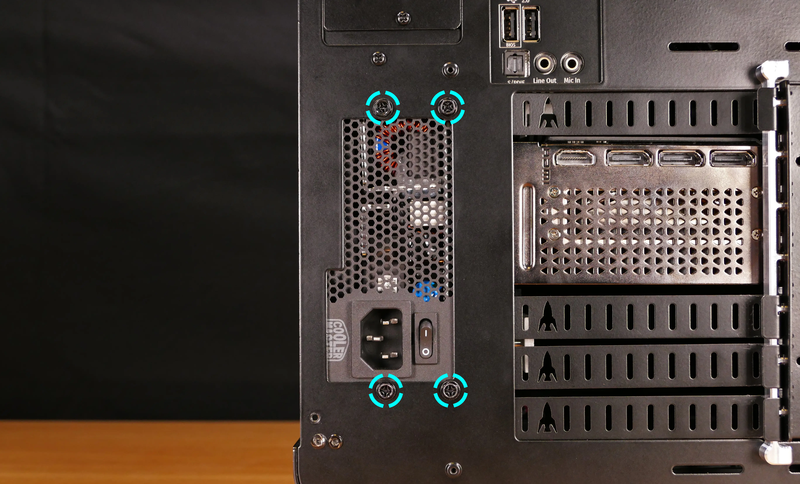
- Unplug all of the modular cabling from the back of the PSU.
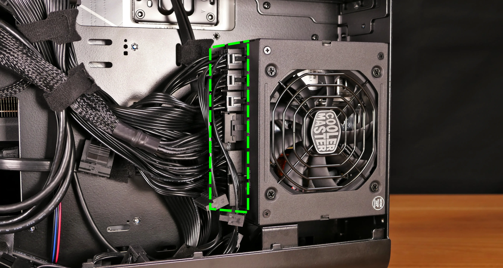
- Remove/replace the power supply.
- The replacement PSU should be installed with the fan facing out of the case.
- Place the PSU on the metal stand and hold it against the screwholes in the back of the case while attaching it.
- Connect the power cables to the new power supply.
- If the new PSU is not the same model as the old one, it’s recommended to completely remove the old power cables and replace them with the cables that came with the new PSU.
- Reinstall the right side panel.
Cleaning the side dust filters:
The side intake fans are covered by individual dust filters, which can be removed for cleaning.
Tools required: Cross-head (Phillips) screwdriver
Time estimate: 10 minutes
Difficulty: Easy ●
Steps to clean the side dust filters:
- Follow the steps above to remove the left side panel.
- Unscrew the four screws holding the fan panel onto the side panel.
- Do not unscrew any of the six sideways screws.
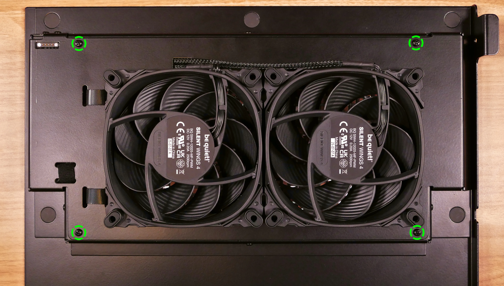
- Unscrew the four screws (per fan) holding the dust filter and fan onto the panel.
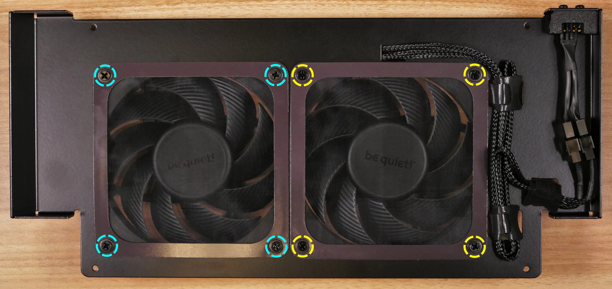
- Pull the dust filters off of the panel.
- If you’re not replacing the fans, leave them in place under the panel to keep them in the correct orientation.
- Clean dust out of the dust filter using compressed air or gentle running water.
- If liquid is used to clean the dust filter, wait until the dust filter has completely dried before reinstalling it.
- Reinstall each dust filter.
- The glossy side of the dust filter should face away from the panel; the matte side should face towards the panel.
- The curved/glossy side of the washer faces the screw head; the flat/matte side faces the dust filter.
- From bottom to top, the order of components should be: fan, panel, dust filter, washer, screw.
- Reattach the fan panel to the rest of the left side panel.
- The pogo pins should be visible and nearest to the top of the panel.
- Reinstall the left side panel.
Replacing the side fans:
The two 120mm side intake fans can be individually replaced.
Part numbers:
- Side fans: Be Quiet! Silent Wings 4 120mm (
SIW4-12025-MF-PWM)
Tools required: Cross-head (Phillips) screwdriver
Time estimate: 25 minutes
Difficulty: Easy ●
Steps to replace the side fans:
- Follow the steps above to remove the left side panel and remove the side fan dust filters and screws.
- Disconnect then fan(s) being replaced from the pogo pin fan splitter.
- By default, the fan pictured on the left is plugged into the left connector of the splitter, and the fan pictured on the right is plugged into the right connector. However, both connectors provide the same signal.
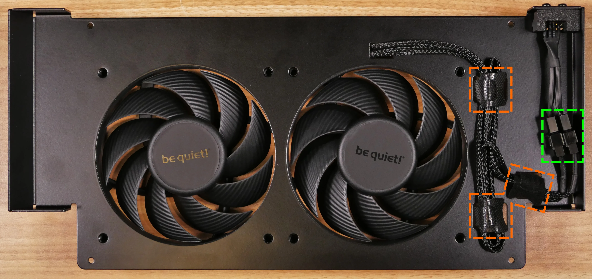
- Unfasten the velcro strips and free the fan cables.
- Pull each fan being replaced away from the panel, passing the end of the cable through the channel in the panel.
- Place the new fan(s) under the panel.
- With the panel oriented as shown above, both fans should be oriented so their cables point towards the top left.
- The spinning side of the fan should face through the panel, while the stationary cover should face away from the panel.
- Screw each fan into the panel along with its corresponding dust filter.
- The glossy side of the dust filter should face away from the panel; the matte side should face towards the panel.
- The curved/glossy side of the washer faces the screw head; the flat/matte side faces the dust filter.
- From bottom to top, the order of components should be: fan, panel, dust filter, washer, screw.
- Reattach the fan panel to the rest of the left side panel.
- The pogo pins should be visible and nearest to the top of the panel.
- Reinstall the left side panel.
Cleaning the bottom dust filter:
The bottom intake fans are covered by a dust filter, which can be removed for cleaning.
Tools required: Cross-head (Phillips) screwdriver
Time estimate: 5 minutes
Difficulty: Easy ●
Steps to clean the bottom dust filter:
- Lay the machine down on its right side, with the mesh window facing upwards.
- Use a soft surface (such as a towel) to avoid scratching the chassis.
- Unscrew the five screws holding the dust filter onto the machine.
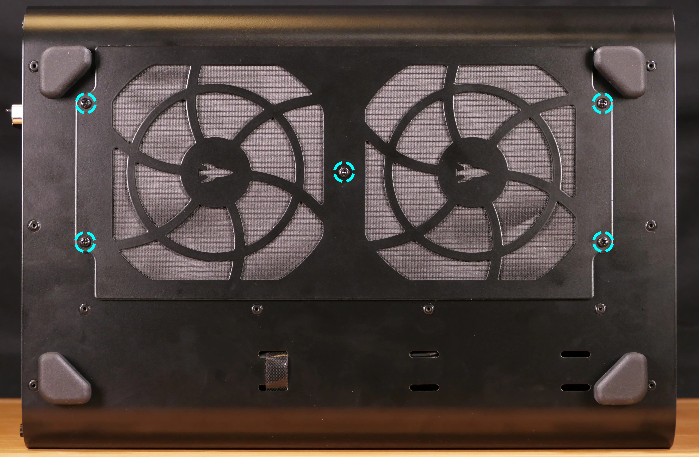
- Pull the dust filter off of the machine.
- Clean dust out of the dust filter using compressed air or gentle running water.
- If liquid is used to clean the dust filter, wait until the dust filter has completely dried before reinstalling it.
- While holding the dust filter onto the bottom of the machine, reinstall its five screws.
- By default, the rockets point towards the front of the machine.
- The mesh should face inward towards the chassis, with the metal frame facing outward.
Replacing the bottom fans:
The two 140mm bottom intake fans can be individually replaced.
Part numbers:
- Bottom fans: Be Quiet! Silent Wings 4 140mm (
SIW4-14025-MF-PWM)
Tools required: Cross-head (Phillips) screwdriver
Time estimate: 20 minutes
Difficulty: Easy ●
Steps to replace the bottom fans:
- Follow the steps above to remove the left side panel.
- Unplug the fan(s) being replaced from the bottom fan splitter.
- Turn the machine on its right side and remove the bottom dust filter.
- Remove the four screws (per fan) securing the fan to the chassis.
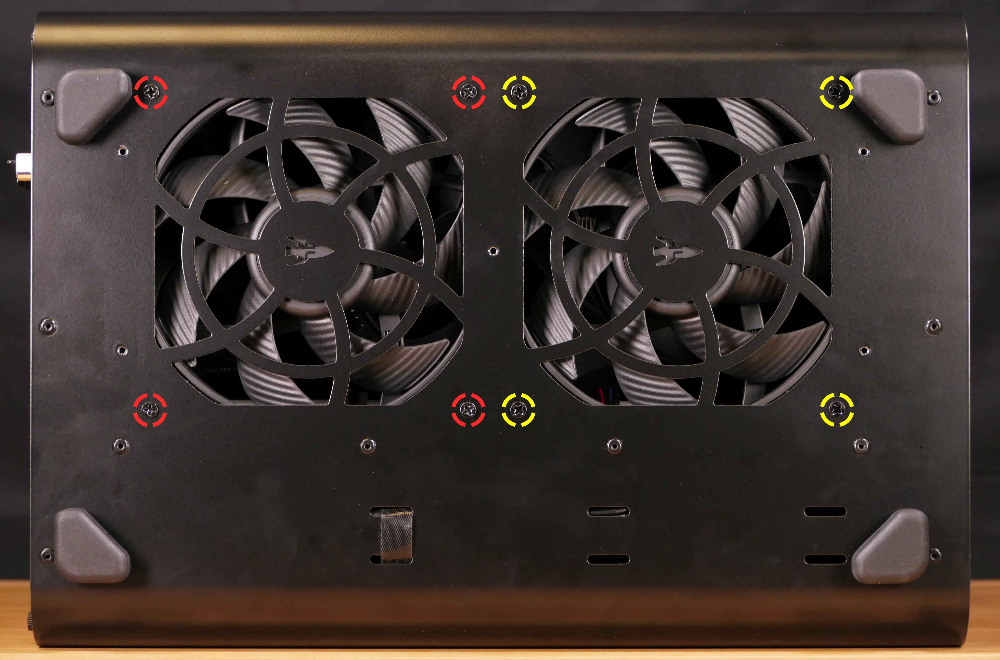
- Screw in the new fan(s).
- Reinstall the bottom dust filter.
- Set the machine upright again and plug the new fan(s) into the bottom fan splitter.
- Reinstall the left side panel.
Replacing the CPU cooler and CPU:
Thelio Mira R4-N4 includes a self-contained liquid cooler to dissipate heat from the CPU to the radiator, where the CPU cooler’s fans expel it from the system. Supported cooler sizes are 280mm (2x140mm) and 240mm (2x120mm). Depending on your climate and the age of the machine, replacing the thermal paste between the CPU and the cooler may help the system run cooler.
Part numbers:
- CPU cooler (280mm or 240mm):
- ID-Cooling Frostflow X 280
- …or equivalent.
- The CPU uses an AMD AM5 socket.
Tools required: Cross-head (Phillips) screwdriver, thermal paste
Time estimate: 45 minutes
Difficulty: High ●
Steps to remove the CPU cooler/thermal paste:
- Follow the steps above to remove the left and right side panels, remove the front glass, and remove the top shell.
- Unfasten the velcro strip to free the CPU cooler’s signal cables from behind the motherboard.
- The braided cable leading to the
FANIN1port of the Thelio Io board plugs into the motherboard’sCPU_FAN1header. - The thinner cable leading to the CPU cooler pump plugs into the motherboard’s
AIO_PUMPheader.
- The braided cable leading to the
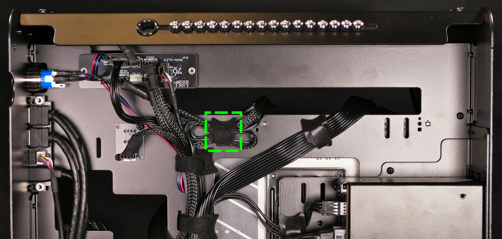
- Set the computer on its right side (with the motherboard at the bottom).
- Unscrew the four screw heads holding the CPU cooler pump onto the CPU (highlighted red below).
- The screw heads will come off of the posts underneath when fully unscrewed.
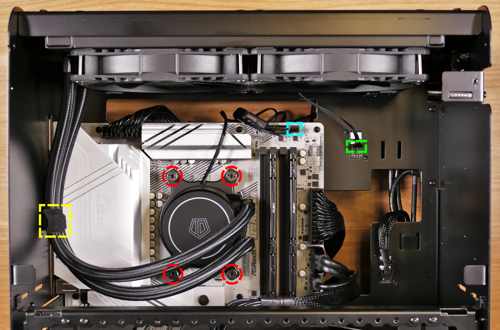
- Unplug the CPU cooler pump from the
AIO_PUMPheader on the motherboard, highlighted cyan above. - Unplug the combined CPU cooler fan cable from the fan splitter board next to the motherboard, highlighted green above.
- Unfasten the velcro strip holding the CPU cooler’s liquid tubes to the back of the chassis, highlighted yellow above.
- While holding the radiator in place so it doesn’t fall, unscrew the eight silver screws holding the radiator on from the top of the chassis.
- If you aren’t replacing the CPU cooler or fans (but are replacing only the thermal paste and/or the CPU), you can skip this step and leave the radiator attached to the chassis.
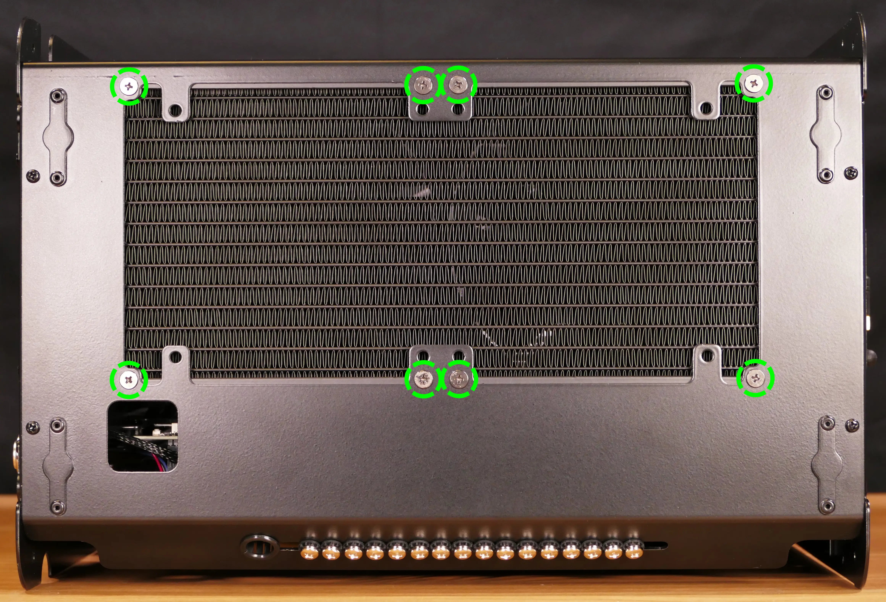
- Remove the CPU cooler pump and radiator (if applicable) from the chassis.
- Using a paper towel, clean the existing thermal paste off of the cooler and CPU. You may also use a small amount of rubbing alcohol if the old paste is dried or difficult to remove.
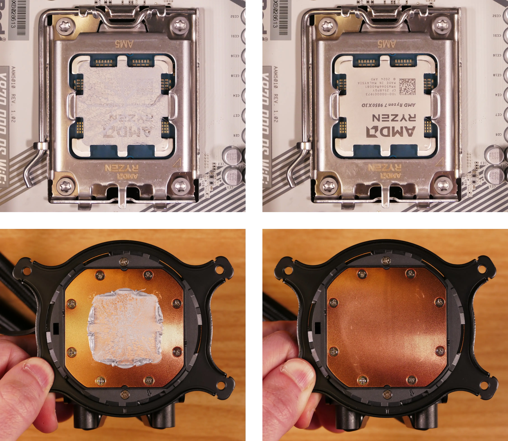
Steps to replace the CPU:
- Push the locking lever down and outward until it’s able to spring away from the motherboard.
- Caution: the locking lever may spring up with significant force when freed.
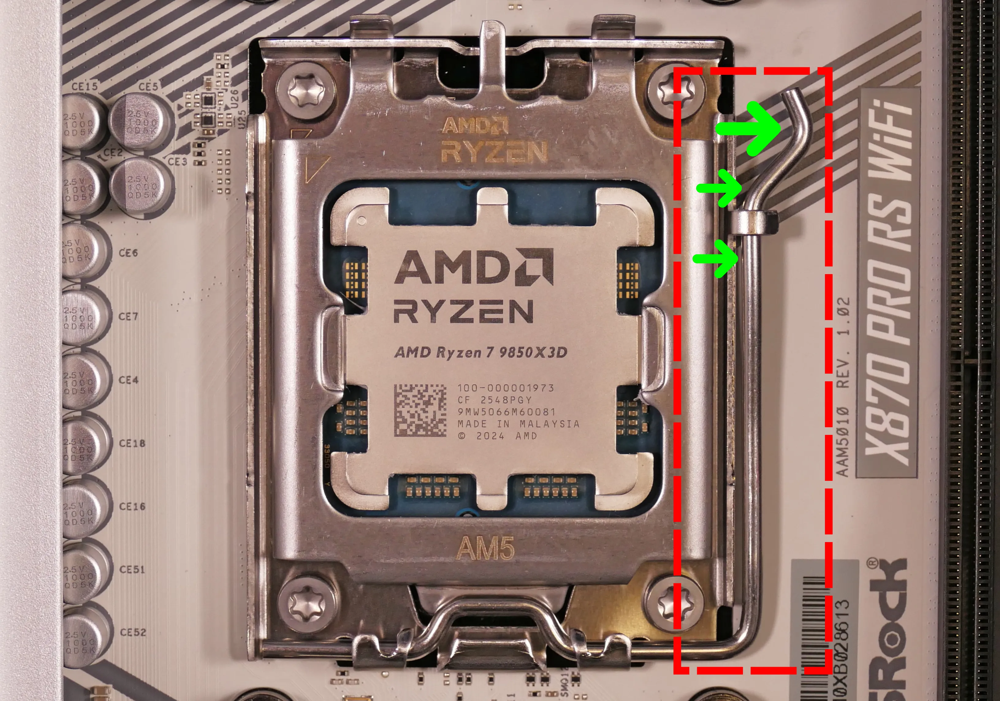
- Flip the CPU holder away from the CPU.
- The CPU holder opens in the opposite direction from the locking lever.
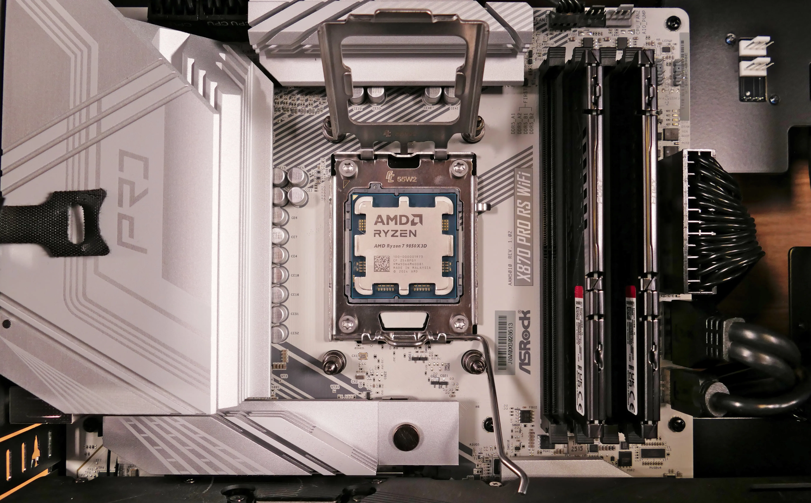
- Carefully lift the CPU out of the CPU socket.
- Be careful not to bend any of the gold pins on the CPU socket, and do not touch the gold pads on the CPU.
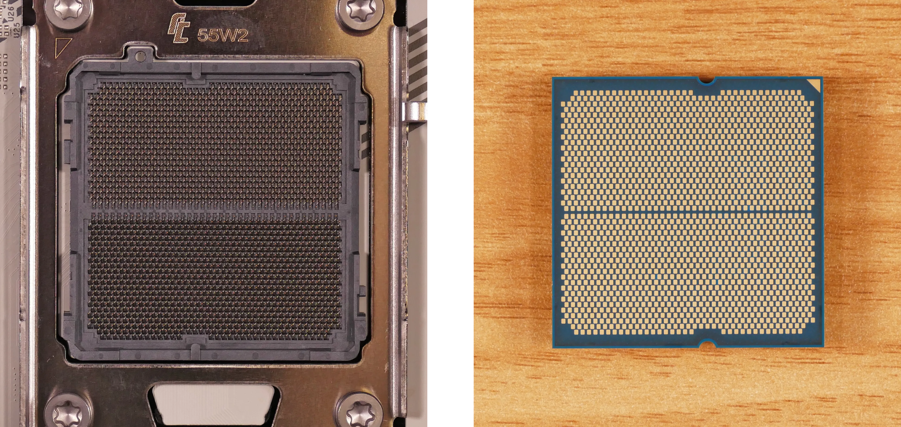
- Gently place the new CPU into the socket.
- The triangle on the CPU should be oriented to match the triangle on the CPU cover, pointing towards the top left of the motherboard.
- Flip the CPU cover back onto the CPU and push the locking lever down into place.
Steps to replace the CPU cooler’s fans:
- Unscrew the four silver screws (per fan) holding the fan(s) onto the radiator.
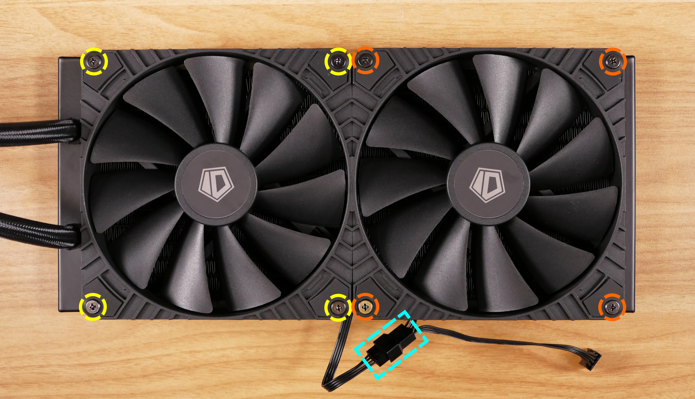
- Unplug the daisy-chained cable connecting the two fans.
- Remove the old fan(s) from the radiator.
- Align the new fan(s) and plug the fans into each other.
- The spinning side of the fans should face away from the radiator.
- With the liquid tubes on the left, the cables should be oriented towards the bottom of the radiator.
- The cable channels from the center of each fan (behind the fan blades) should point to the same place (the corner at which the fans connect).
- The fan closer to the tubes plugs into the other fan; the fan farther from the tubes plugs into the chassis.
- Screw in the new fan(s).
Steps to install the thermal paste/CPU cooler:
- Draw an
Xshape of thermal paste onto the CPU.
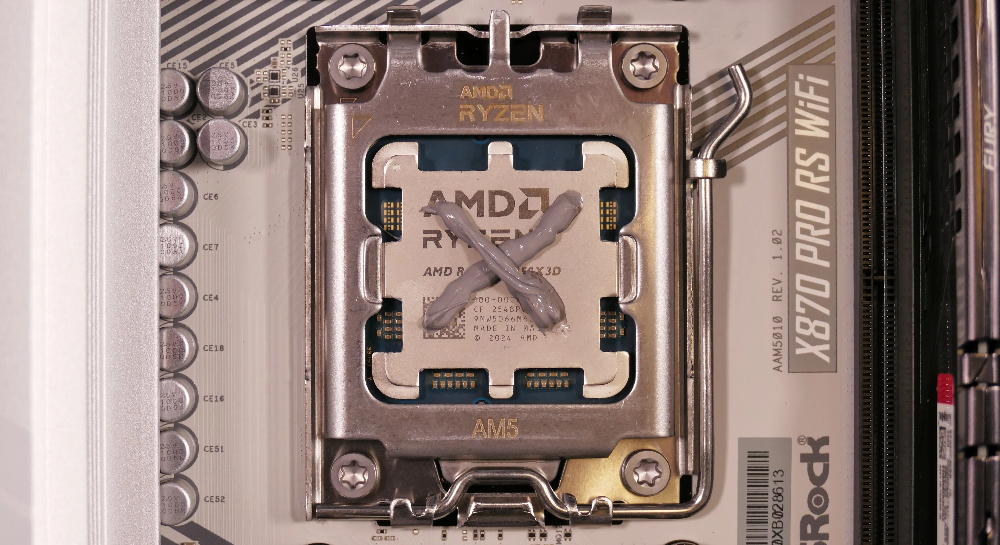
- Place the all-in-one liquid cooler back into the chassis with the tubes running against the rear of the chassis.
- Place the cooler pump back onto the four posts surrounding the CPU.
- The cooler pump’s logo should have the pentagon pointed downwards, and the tubes should come off the right side.
- Screw in the screw caps over each post.
- Partially install each screw cap first, then fully tighten them in diagonal pairs.
- While holding the cooler’s radiator in place against the top of the chassis, screw it in from above using its eight silver screws.
- Again, partially install all eight screws first to ensure alignment, then go back and tighten them all.
- Set the computer upright.
- Plug the cooler pump into the
AIO_PUMPheader at the top right corner of the motherboard. - Plug the fan cable into the fan splitter to the right of the motherboard.
- By default, the cable plugs into the bottom header; both headers provide the same signal.
- Pull the excess cooler pump cable through the cable management cutout above the motherboard, and secure it behind the motherboard along with the braided motherboard fan input cable using the velcro strap.
- Hold the liquid tubes against the back of the chassis and secure them in place using the velcro strap.
- Reinstall the top shell, front glass, and both side panels.
Replacing the Thelio Io board:
Named after Jupiter’s moon Io, the Thelio Io daughterboard handles the front power button and fan control. If the Thelio Io board becomes defective, it can be replaced using the instructions below.
Part numbers:
- Thelio Mira B4-N3 uses Thelio Io version 2 (PCB revision thelio_io_2.3).
Tools required: Cross-head (Phillips) screwdriver
Time estimate: 35 minutes
Difficulty: High ●
Steps to replace the Thelio Io board:
- Follow the steps above to remove both side panels, remove the front glass, and remove the top shell.
- Unplug all wires from the Thelio IO board (behind the right side panel, near the power button).
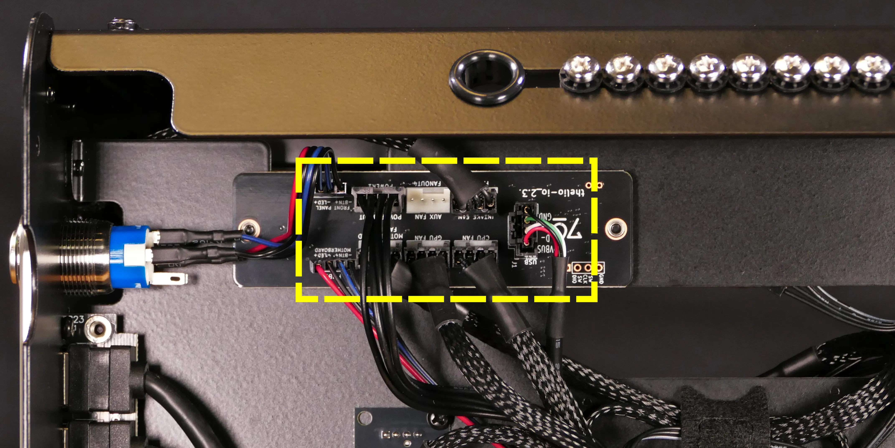
- Lay the machine on its right side and follow the steps above to remove the CPU cooler radiator from the top of the chassis.
- It is not necessary to remove the CPU cooler pump from the CPU/motherboard, or to unplug the CPU cooler fans from the chassis.
- Stand the machine upright again.
- The CPU cooler radiator can rest on the GPU brace, but the weight of the radiator should not be placed directly onto the GPU. Alternatively, the GPU brace and GPU can be removed to provide more working room.
- Unscrew the two screws holding the Thelio Io board onto the chassis from the opposite side.
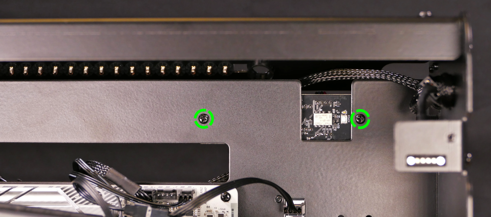
- Screw in the new Thelio Io board from behind.
- Orient the board so the System76 logo is upside-down (and so the
FRONT PANELheader is closest to the front panel).
- Orient the board so the System76 logo is upside-down (and so the
- Lay the machine on its right side, reinstall the CPU cooler radiator, and stand the machine upright again.
- Reconnect the wiring to the Thelio Io board.
- Reinstall top shell, front glass, and side panels.
- If necessary, flash the appropriate Thelio Io firmware for your chassis revision.
- Boards provided by System76 for a specific system should already have the correct firmware, while boards repurposed from other systems may need flashing.
Thelio Io wiring guide:
-
When wiring the Thelio Io board, refer to the port labels and the following guide (listed from left to right, considering the board mounts upside-down).
PFP1/FRONT PANEL- to the power button on the front panel.- On the Thelio Io board, the wire color order (from left to right) is red, black, blue, black (the red wire connects to the
LED+pin).
- On the Thelio Io board, the wire color order (from left to right) is red, black, blue, black (the red wire connects to the
PMB1/MOTHERBOARD- to thePANEL1header at the bottom right of the motherboard, highlighted purple below.- On both the Thelio Io board and the motherboard, the wire color order (from left to right) is red, black, blue, black.
POWER1/POWER INPUT- to the power supply via a 4-pin Molex adapter.- The white plastic clip needs to be held away from the connector to unplug this cable from the Thelio Io board.
FANIN1/MOTHERBOARD FAN INPUT- to theCPU_FAN1header near the top right of the motherboard, highlighted cyan below.
FANOUT4/AUX FAN- disconnected by default.FANOUT3/GPU FAN- to the bottom fan splitter (highlighted green below), which connects to both bottom case fans.
FANOUT2/INTAKE FAN- to the pogo pin connector for the left side panel fans.
FANOUT1/CPU FAN- to the top fan splitter (connecting to the CPU radiator fans), highlighted cyan below.
USB- to theUSB_7_8header at the bottom center of the motherboard, highlighted orange below.- A small clip needs to be held down to unplug this cable from the Thelio Io board.
Replacing the front I/O:
The front I/O board (containing the front USB and audio ports) can be replaced if necessary.
Part numbers:
- I/O board:
MYS7823(Rev.A01)
Tools required: Cross-head (Phillips) screwdriver
Time estimate: 35 minutes
Difficulty: High ●
Steps to replace the front I/O:
- Follow the steps above to remove both side panels.
- If installed, remove the additional 2.5“ or 3.5“ drive bay.
- From the left side of the case, unscrew the two screws holding the I/O board in place.
- From the right side of the case, unfasten the velcro straps holding the I/O board’s cabling in place.
- All four cables pass through the first two velcro straps (highlighted green below).
- The three USB cables pass through the third velcro strap (highlighted cyan).
- Unplug the I/O board’s cables from the
USB32_TC1andUSB32_5_6headers on the right side of the motherboard (above the GPU), and theHD_AUDIO1header at the bottom left of the motherboard (below the GPU).
- Plug the new I/O board’s cables into the same headers.
- Fasten the new I/O board’s cables into the velcro straps.
- Slide the new I/O board into its cutout on the front of the chassis, then screw it into place.
- Ensure the ports extend all the way through the front accent’s cutouts before inserting the screws.
- Reinstall the side panels.
Replacing the power button:
The power button can be replaced independently of the surrounding front panel.
Part numbers:
- Power button:
PB-02A-19-RF-BOW(stainless steel, white LED)
Tools required: Cross-head (Phillips) screwdriver
Time estimate: 35 minutes
Difficulty: High ●
Steps to troubleshoot the power button:
- Ensure the power supply switch on the back of the computer is set to the
1position.- If it was set to
0, change it to1and try powering on the computer again.
- If it was set to
- Follow the steps above to remove the left side panel.
- Press the white
POWERbutton on the right side of the Thelio Io’s chassis cutout, located behind the radiator fans at the top of the chassis.
- If the system powers on with the
POWERbutton, then the front power button or its connection to the Thelio Io board may be faulty. Proceed to the next section to try re-plugging or replacing the power button.- If the system doesn’t power on with the
POWERbutton, the Thelio Io board or another component (such as the motherboard or power supply) may be faulty, or a connection between those components may be missing. Check the Thelio Io wiring and the power supply cabling.
- If the system doesn’t power on with the
Steps to replace the power button:
- Follow the steps above to remove both side panels and remove the front glass.
- Unscrew the two screws holding the front accent onto the chassis.
- Unplug the power button from the
FRONT PANEL/PFP1port at the top left of the Thelio Io board. - Unscrew the power button through the front of the accent.
- A gripping pad or tool may be required to loosen the button.
- Screw the new power button into the accent.
- Plug the new power button into the
FRONT PANEL/PFP1port on the Thelio Io board with the red wire on the left (facing the power button).- The wires connected to the power button should be laid out as shown below:

- The wires connected to the power button should be laid out as shown below:
- Place the front accent against the front panel and screw it into place from behind.
- Ensure the front I/O ports are properly aligned within the accent while screwing in the accent. If necessary, unscrew the front I/O ports to adjust them.
- Reinstall the front glass and side panels.